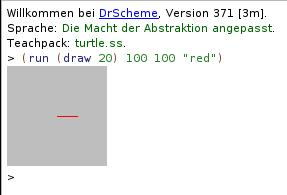
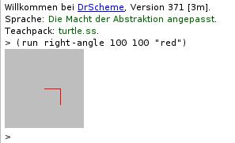
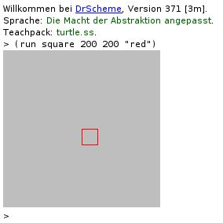
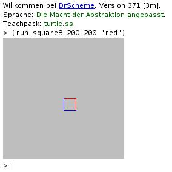

8 Turtle-Grafik: "turtle.ss"
Note: This is documentation for the "turtle.rkt" teachpack that goes with the German textbook Die Macht der Abstraktion.
Turtle-Grafik ist eine Methode zum Erstellen von Computergrafiken. Das Zeichnen wird dabei durch das Bewegen einer virtuellen Schildkröte über den Zeichenbereich modelliert. Eine Schildkröte kann durch drei Befehle bewegt werden:
(move n) Bewegt die Schildkröte um n Pixel ohne zu zeichnen.
(draw n) Bewegt die Schildkröte um n Pixel und zeichnet dabei.
(turn n) Dreht die Schildkröte um n Grad im Uhrzeigersinn.
Wir stellen jetzt ein Teachpack für DrRacket vor, mit dessen Hilfe solche Turtle-Grafiken erstellt werden können.
8.1 Tutorial
Unser Ziel ist es, in diesem Tutorial ein Quadrat mithilfe der Prozeduren des Teachpacks zu zeichnen. Aus diesem Grund müssen wir zunächst mit der Prozedur draw eine Linie nach rechts malen. Die initiale Ausgansposition der Turtle ist in der Bildmitte mit Blick nach rechts. Mit (draw 20) bewegen wir die Turtle dann 20 Pixel nach rechts und zeichnen dabei. Um das resultierende Bild zu sehen ist, müssen wir die Turtle mittels der Prozedur run laufen lassen. Die restlichen Parameter für run sind die Höhe und die Breite des Bildes sowie die Farbe, in der gezeichnet werden soll. Geben Sie also folgenden Befehl in die REPL ein, um Ihre erste Turtle-Grafik zu erstellen:
Sie erhalten dann eine Ausgabe wie die folgende:

Nun vervollständigen wir die Linie zu einem rechten Winkel: wir drehen die Turtle um 90° nach rechts und zeichnen dann eine Line der Länge 20 Pixel nach unten. Zum Drehen einer Turtle verwenden wir die Prozedur turn.
Da wir ein Quadrat aus zwei rechten Winkeln zusammensetzen können, abstrahieren wir über das Zeichnen des rechten Winkels. Dazu schreiben wir eine Prozedur right-angle die als Parameter eine Turtle erhält:
(: right-angle (turtle -> turtle)) (define right-angle (lambda (t1) (let* ((t2 ((draw 20) t1)) (t3 ((turn -90) t2)) (t4 ((draw 20) t3))) t4)))
Das Ergebnis sieht dann so aus:

Um das Quadrat komplett zu zeichnen, sollen nun zwei rechte Winkel verwendet werden. Wir zeichnen also einen rechten Winkel, drehen uns um 90° nach rechts, und zeichnen einen zweiten rechten Winkel.
(: square (turtle -> turtle)) (define square (lambda (t1) (let* ((t2 (right-angle t1)) (t3 ((turn -90) t2)) (t4 (right-angle t3))) t4)))
So sieht das Ergebnis aus:

8.1.1 Verbesserungen
An dem Beispiel ist leicht zu sehen, dass es zum Zeichnen mit Hilfe von Turtle-Grafik oft erforderlich ist, Zwischenwerte wie t1, t2 etc., an die nächste Prozedur weiterzureichen, die Werte ansonsten aber nicht weiterverwendet werden. Beispielsweise werden in der obigen Definition von square die Variablen t1, ..., t4 nur gebraucht, um die Prozeduren right-angle, (turn -90) und right-angle hintereinander auszuführen.
Um solche Fälle einfach programmieren zu können, enthält das Turtle-Teachpack die Prozedur sequence. Damit können wir eine zu right-angle äquivalente Version wesentlicher einfacher aufschreiben:
(define right-angle2 (sequence (draw 20) (turn -90) (draw 20)))
Ebenso wie right-angle können wir square leichter schreiben als:
(define square2 (sequence right-angle (turn -90) right-angle))
8.2 Prozeduren
值
turtle : signature
Folgender Code
